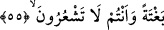
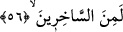

55. Siz farkında olmadan, ansızın başınıza azap gelmezden önce, Rabbinizden
size indirilenin en güzeline (Kur’an’a) tâbi olun.
“Siz” gafletiniz sebebiyle “farkında olmadan,” birtakım tedbirler almak ve
hazırlanmak için duyu organlarınızla gelişini idrâk etmeden “ansızın başınıza azap”
yâni bir belâ ve cezâ “gelmezden önce,” Siz onun geleceğini bilmiyorsunuz ki hazırlıklı
olasınız.
Râğıb der ki: “
” bir şeyin beklenmedik bir yerden/bir anda ânîden gelivermesidir.
Ansızın geleceği belirtilen bu azab ile ölümün kasdedilmiş olması da mümkündür.
Çünkü ölüm, uhrevî azâbın anahtarı ve yoludur. Azab ona bitişiktir.
“Rabbinizden size indirilenin en güzeline” yâni “Allah sözün en güzelini
indirmiştir” (ez-Zümer, 39/23) âyetinin de gösterdiği üzere Kur’an’a “tâbi olun.” Ya
da ruhsatları değil azîmetleri esas alın.
Beyzâvî ve onun peşinden gidenler derler ki: “Belki de bu “en güzeli”nden maksad,
tıpkı inâbe ve tâate devam etmek gibi daha genel ve faydası daha çok olandır.
Hasan Basrî der ki: “O’na tâate sarılın ve O’na karşı gelmekten uzak durun. Çünkü
size indirilen şeyler üç çeşittir: Çirkin şeyler sakınasınız diye zikredilir. Güzel şeyler
imrenip tercih edesiniz diye zikredilir. Orta şeyler ise onlara yönelmekte ya da onlardan
yüz çevirmekte size bir günah/sorumluluk olmasın diye zikredilir.”
et-Te’vîlâtü’n-Necmiyye’de der ki: “Allah Teâlâ işâret etmektedir ki Allah tarafından
indirilenler arasında güzel olanlar vardır ki onlar (Hz. Peygamber (a.s.)’ın) kendileriyle
cennete çağırdığı âyetlerdir. Yine onlar arasında daha güzel olanlar vardır ki
kendileriyle Allah Teâlâ’ya çağırdığı âyetlerdir. Nitekim Allah Teâlâ: “ve Allah’a -
O’nun izniyle- çağıran biri olarak...” (el-Ahzâb, 33/46) buyurmuştur.”
56. Kişinin: Allah’a yakınlık konusunda kusurlu davrandığım için bana yazıklar
olsun! Gerçekten ben alay edenlerdendim (diyeceği günden sakının)!
“Kişinin: Allah’a yakınlık” O’na itâat etmek, hakkını ikame etmek ve yoluna girmek
“konusunda kusurlu davrandığım için bana yazıklar olsun!”
Bu âyet, yukarıda geçen inâbe, ihlâs ve Kur’an’a tâbi olma fiillerinin gerekçesini